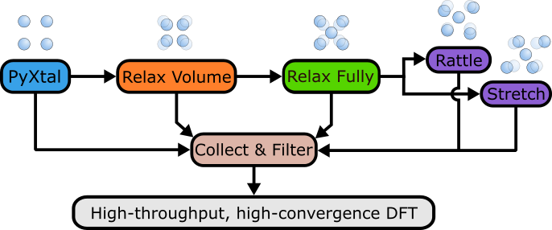
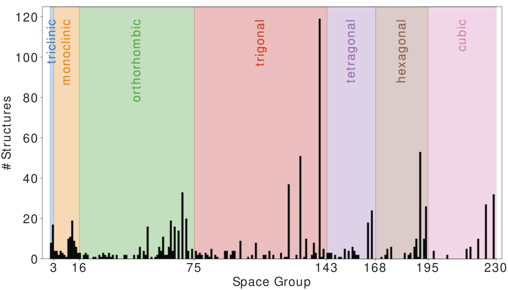
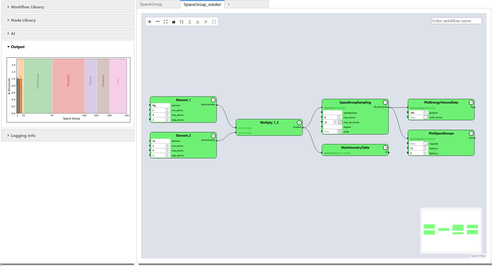
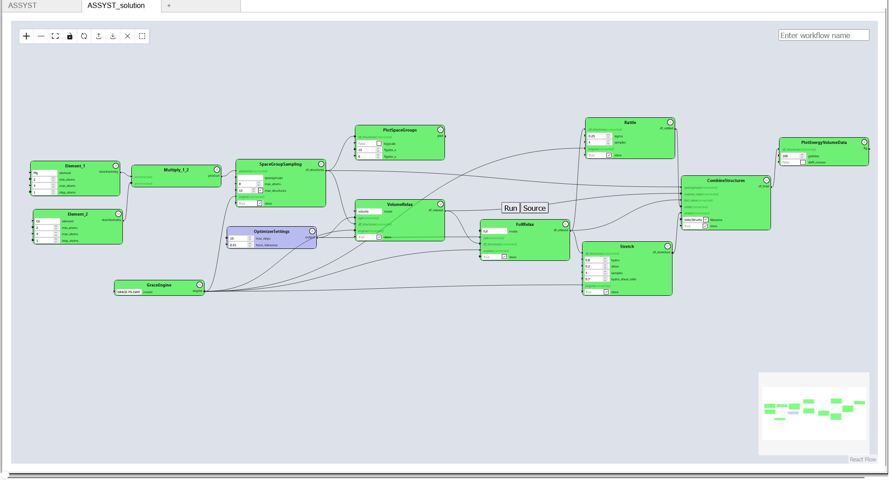

Generating datasets for Machine Learning Interatomic Potentials with the ASSYST method #
References#
Background #
Automated Small SYmetric Structure Training or ASSYST is a method to generate training data for machine learning potentials. The key idea is to use small structures to automatically explore structurally and chemically diverse atomic environments and provide training data around the energetically most favorable ones.
Workflow Overview #

Covering Potential Energy Surface #

Consider the simplified one-dimensional potential energy surface (PES) vs the configuration space with a global minimum and multiple local minima. Starting with the structures generated from spacegroup sampling (blue points), they fall onto different locations on the PES curve. To cover the different configuration space, we can do a volume relaxation (orange points) that covers points closer to the minima. Then, to get to the minima we can do a full relaxation with atoms and volume (green points). However, to cover the space of higher energy range, we can stretch the structures by applying different strains (e.g., shear, hydrostatic) which represents structural deformations or rattle the atomic positions in the structure (purple points) which would cover the phonon properties.
By sampling the space even more, we improve the description of the potential energy surface, hence the transferability of the potentials trained on such datasets.
Transferability #
ASSYST trained potentials describe also structures that they are not directly trained on, such as point and planar defects.

Liquid state is also well described and potentials are stable for long running thermodynamic integrations.

This phase diagram is our goal for today!
Literature #
Mg and Defects: https://journals.aps.org/prb/abstract/10.1103/PhysRevB.107.104103
Ternary Mg/Al/Ca: https://www.nature.com/articles/s41524-025-01669-4
Spacegroup Sampling #
The first step in the ASSYST workflow is to decide which chemical space to cover and how densely. Increasing the new number of total atoms allows you to generate more and more complex structures and also sample the chemical space more densely.
This example is for ‘Mg’ unary system, where we sampled 1-10 Atoms in the structures.

Task
Build a small workflow that creates a dataframe table of spacegroup sampling Mg and Ca. Consider the following steps,
Load the
SpaceGroupworkflow.In each structure,
MgandCashould have a minimum of2atoms and a maximum of4atoms. (Check the output ofMultiplynode usingStoichiometryTable)Add
SpaceGroupSamplingnode from node library and connect it with the output ofMultiply.Limit the maximum number of sampled structures to
10. Each sampled structure should contain at most8atoms.Plot the space group sampling.
BONUS: Plot the energy Vs volume distribution.
Check atomistic -> assyst for all the nodes.
from core import Workflow
from core.gui import PyironFlow, GUILayout
/cmmc/ptmp/pyironhb/mambaforge/envs/pyiron_mpie_cmti_2026-02-16/lib/python3.12/site-packages/nglview/__init__.py:12: UserWarning: pkg_resources is deprecated as an API. See https://setuptools.pypa.io/en/latest/pkg_resources.html. The pkg_resources package is slated for removal as early as 2025-11-30. Refrain from using this package or pin to Setuptools<81.
import pkg_resources
from pyiron_nodes.atomistic.assyst.plot import PlotSpaceGroups, PlotEnergyVolumeHistogram
from pyiron_nodes.atomistic.assyst.stoichiometry import SpaceGroupSampling, ElementInput, StoichiometryTable
from pyiron_nodes.basic.math import Multiply
from pyiron_nodes.atomistic.calculator.optimize import RelaxLoop, GenericOptimizerSettings
from pyiron_nodes.atomistic.structure.transform import RattleLoop, StretchLoop
from pyiron_nodes.atomistic.engine.grace import GRACE
from pyiron_nodes.basic.math import Multiply
from pyiron_nodes.atomistic.structure.group import CombineStructures
def make_spg(
name, *elements,
min_atoms=2, max_atoms=4, max_structures=50,
delete_existing_savefiles=False
):
wf = Workflow(name)
element_nodes = []
if len(elements) > 0:
e1, *elements = elements
stoi = ElementInput(e1, min_atoms=min_atoms, max_atoms=max_atoms)
setattr(wf, 'Element_1', stoi)
element_nodes.append(stoi)
for i, e in enumerate(elements):
en = ElementInput(e, min_atoms=min_atoms, max_atoms=max_atoms)
setattr(wf, f'Element_{i+2}', en)
element_nodes.append(en)
stoi = Multiply(stoi, en)
setattr(wf, f'Multiply_{i+1}_{i+2}', stoi)
# if len(elements) > 0:
# wf.Multiply = stoi
spg = SpaceGroupSampling(
elements=stoi,
spacegroups=None,
max_atoms=len(element_nodes) * max_atoms,
max_structures=max_structures
)
else:
spg = SpaceGroupSampling(
max_atoms=max_atoms,
max_structures=max_structures
)
plotspg = PlotSpaceGroups(spg)
plothistogram = PlotEnergyVolumeHistogram(spg)
stoichiometry = StoichiometryTable(stoi)
wf.SpaceGroupSampling = spg
wf.StoichiometryTable = stoichiometry
wf.PlotSPG = plotspg
wf.PlotEnergyVolumeData = plothistogram
return wf
elements = ['Mg', 'Ca']
wf = make_spg('SPG_Solution', *elements, max_structures= 10)
layout = GUILayout(flow_widget_width=800, flow_widget_height=600)
pf = PyironFlow([wf], gui_layout = layout,nodes_path="pyiron_nodes")
pf.gui

Full Workflow for a Small Structure Set #
This demonstration uses the GRACE universal force fields for the relaxation steps. Usually, we would run them in low-convergence DFT and then calculate each structure with high-convergence DFT.
Task
Build a complete ASSYST workflow that creates a complete dataframe table of spacegroup sampling Mg and Ca. Consider the following steps,
Load the
ASSYSTworkflow.Add
StretchLoopandRattleLoopnodes (Note:StretchandRattlenodes only work on a single structure and not a dataframe of structures).Add
CombineStructuresnode to combine all the dataframes that we get.Finally, plot the energy Vs volume distribution.
Hint: Check the workflow diagram to see how can you connect the new nodes.
Optional: you can tick the option to save the dataframe into a file by providing a path or a name of filename.
Check atomistic -> structure for relevant structure nodes and atomistic -> engine for GRACE engine.
def make_assyst(
name, *elements,
min_atoms=2, max_atoms=4, max_structures=50,
delete_existing_savefiles=False
):
wf = Workflow(name)
element_nodes = []
engine = GRACE()
wf.GraceEngine = engine
if len(elements) > 0:
e1, *elements = elements
stoi = ElementInput(e1, min_atoms= min_atoms, max_atoms= max_atoms)
setattr(wf, 'Element_1', stoi)
element_nodes.append(stoi)
for i, e in enumerate(elements):
en = ElementInput(e, min_atoms= min_atoms, max_atoms= max_atoms)
setattr(wf, f'Element_{i+2}', en)
element_nodes.append(en)
stoi = Multiply(stoi, en)
setattr(wf, f'Multiply_{i+1}_{i+2}', stoi)
spg = SpaceGroupSampling(
elements= stoi,
spacegroups= None,
max_atoms= len(element_nodes) * max_atoms,
max_structures= max_structures, engine= engine
)
else:
spg = SpaceGroupSampling(
max_atoms= max_atoms,
max_structures= max_structures,
engine= engine
)
plotspg = PlotSpaceGroups(spg)
optimizer_settings = GenericOptimizerSettings()
volume_relax = RelaxLoop(mode="volume",
engine=engine,
opt=optimizer_settings, df_structures=spg)
full_relax = RelaxLoop(mode="full",
engine=engine,
opt=optimizer_settings,
df_structures=volume_relax)
rattle = RattleLoop(
df_structures=full_relax,
sigma=0.25,
samples=4,
engine= engine
)
stretch = StretchLoop(
df_structures=full_relax,
hydro=0.8, # 0.8
shear=0.2, # 0.2
samples=4,
engine= engine
)
combine_structures = CombineStructures(
spacegroups= spg.outputs.df_structures,
volume_relax= volume_relax.outputs.df_relaxed,
full_relax= full_relax.outputs.df_relaxed,
rattle= rattle.outputs.df_rattled,
stretch= stretch.outputs.df_stretched,
filename = "data/Structures_Everything",
store = False
)
plothistogram = PlotEnergyVolumeHistogram(combine_structures)
wf.SpaceGroupSampling = spg
wf.PlotSPG = plotspg
wf.OptimizerSettings = optimizer_settings
wf.VolumeRelax = volume_relax
wf.FullRelax = full_relax
wf.Rattle = rattle
wf.Stretch = stretch
wf.CombineStructures = combine_structures
wf.PlotEnergyVolumeData = plothistogram
return wf
elements = ['Mg', 'Ca']
wf = make_assyst('ASSYST_solution', *elements, max_structures= 10)
layout = GUILayout(flow_widget_width=800, flow_widget_height=600)
pf = PyironFlow([wf], gui_layout = layout,nodes_path="pyiron_nodes")
pf.gui

Precomputed Full Workflow with Large Structure Set #
This is the complete unary Mg dataset if we allowed for high-convergence DFT without tight constraints on structure generation which contains ~9k structures.